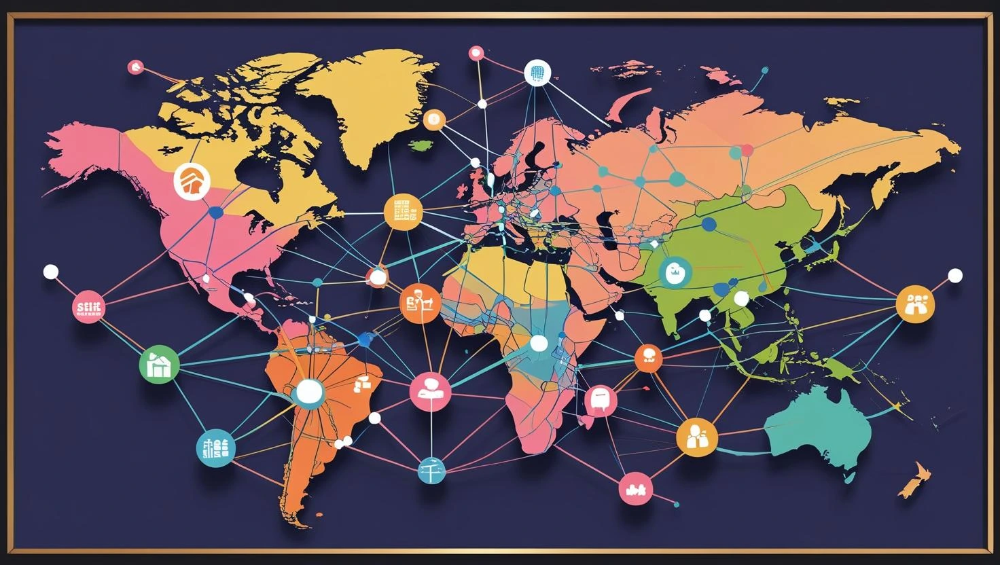
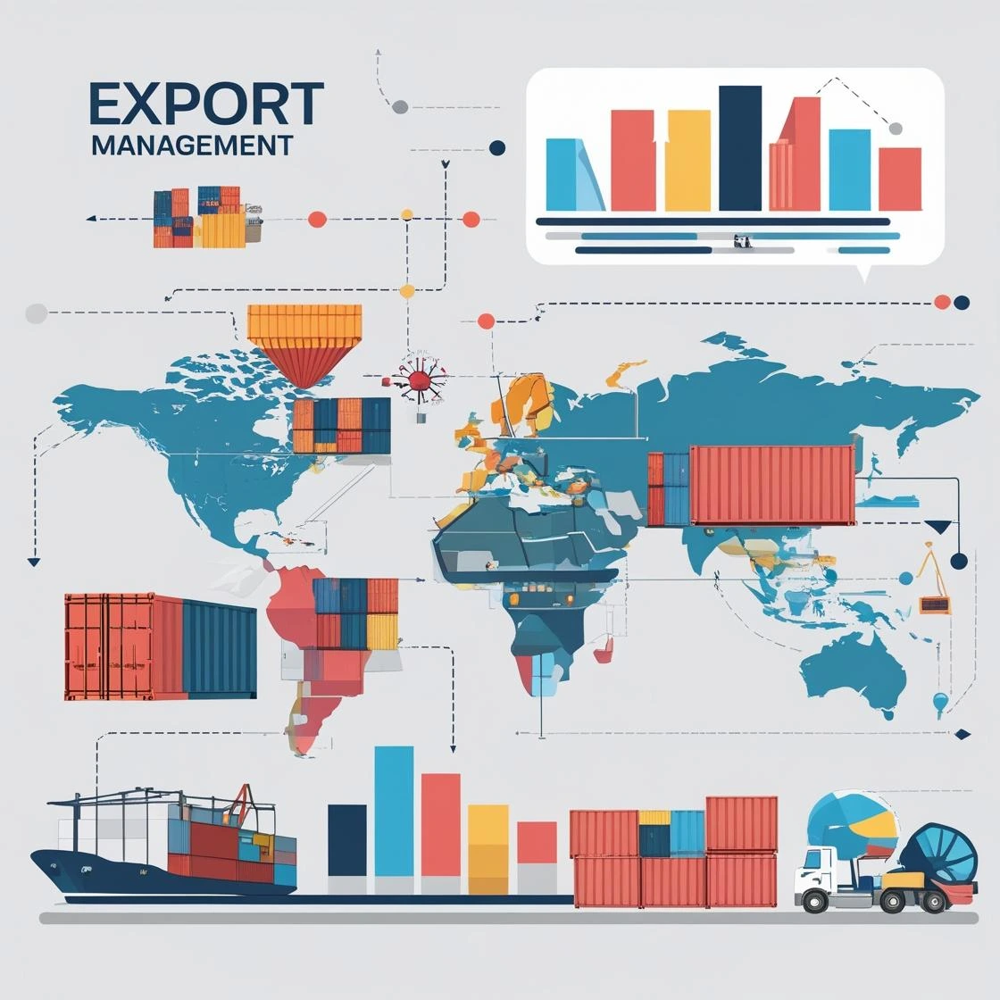

Streamline your international trade operations with our comprehensive suite of services designed for efficiency and growth
Get Custom QuoteTailored sourcing | Compliance-ready paperwork | Responsive trade support
From sourcing to delivery, we handle every aspect of your international trade needs with precision and care

Access our verified network of international suppliers across multiple industries and regions

Comprehensive solutions to streamline your export operations and expand globally
Optimized transportation solutions tailored to your cargo requirements
We go beyond traditional trade services to deliver exceptional value to our clients
Growing partner network across key sourcing and destination markets
Process-led planning focused on reducing avoidable freight and documentation costs
Comprehensive risk assessment and management for every transaction
Dedicated support team with quick, clear response windows
Efficient workflow designed for reliability and transparency at every stage
Understanding your business needs and trade requirements
Developing customized trade strategies and solutions
Implementing the trade plan with precision and care
Ensuring successful completion and follow-up support
Find answers to common questions about our international trade services
We specialize in agricultural products including rice, Garlic Powder, pulses, and moringa powder, but our services extend to various other commodities. Our global sourcing network allows us to facilitate trade across multiple industries. Contact us to discuss your specific product requirements.
We implement rigorous quality control measures including pre-shipment inspections, proper packaging standards, climate-controlled transportation when needed, and real-time monitoring. Our network of quality assurance professionals ensures your products meet the required standards throughout the supply chain.
The timeline varies based on product type, origin, destination, and regulatory requirements. Typically, a complete trade cycle ranges from 2-8 weeks. We provide detailed project timelines during the planning phase and keep you informed throughout the process with real-time updates.
Required documentation typically includes commercial invoices, packing lists, certificates of origin, bill of lading/airway bills, insurance certificates, and any product-specific certifications. Our team handles all documentation preparation and ensures compliance with both origin and destination country requirements.
We have experienced customs brokers and partners in all our operating regions who manage the clearance process. We ensure proper classification of goods, accurate valuation, compliance with regulations, and timely submission of documents to avoid delays and penalties.
Our team of experts is ready to help you navigate international markets with confidence and efficiency
Get Started Today